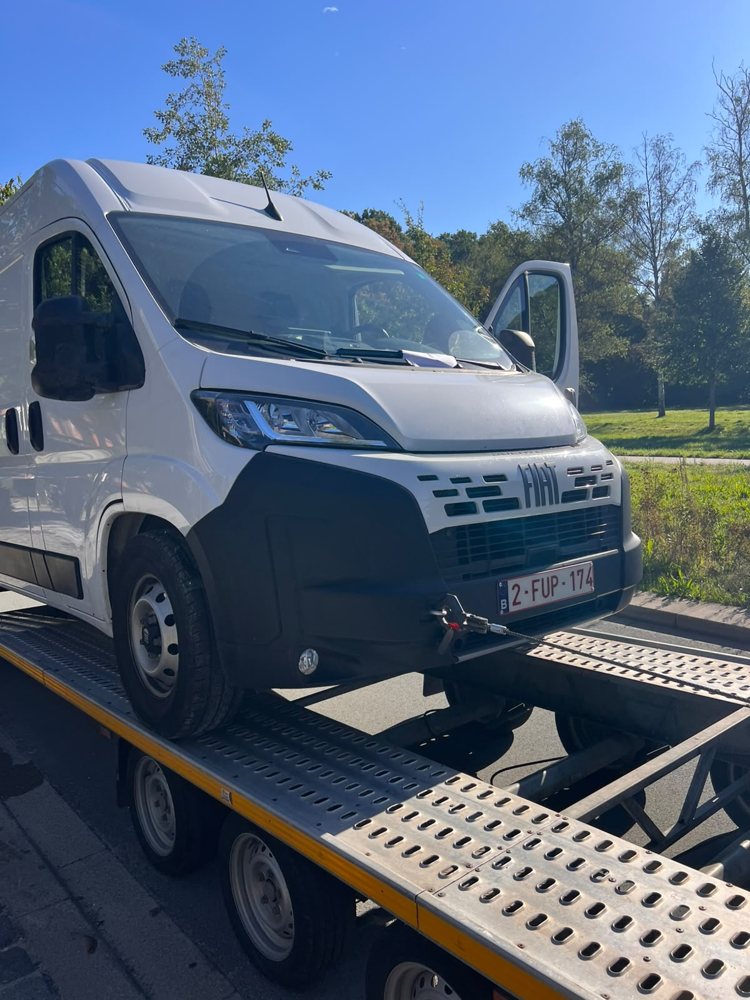
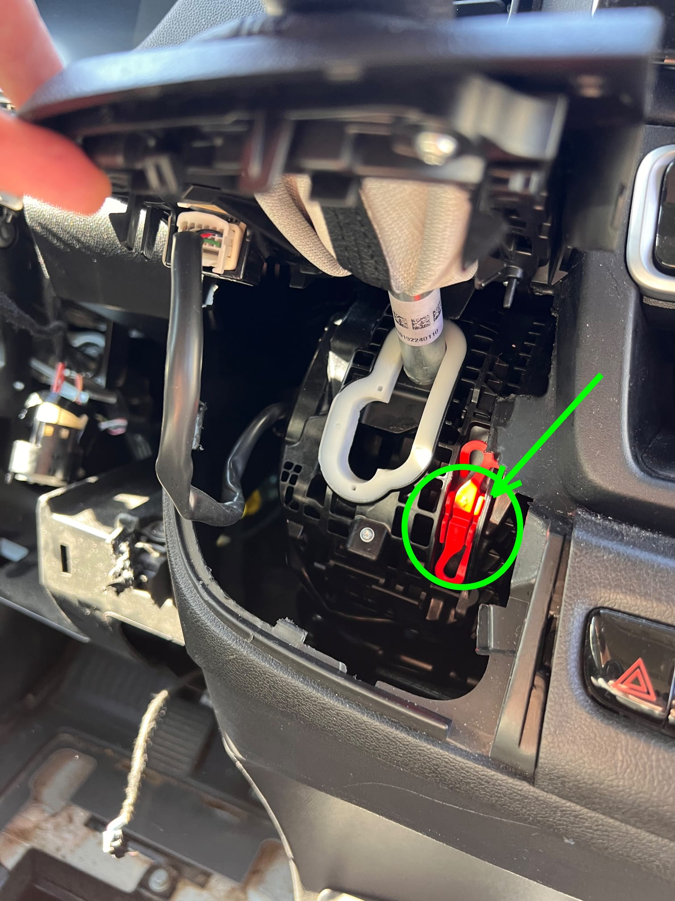
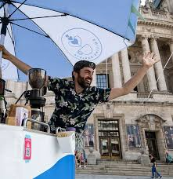
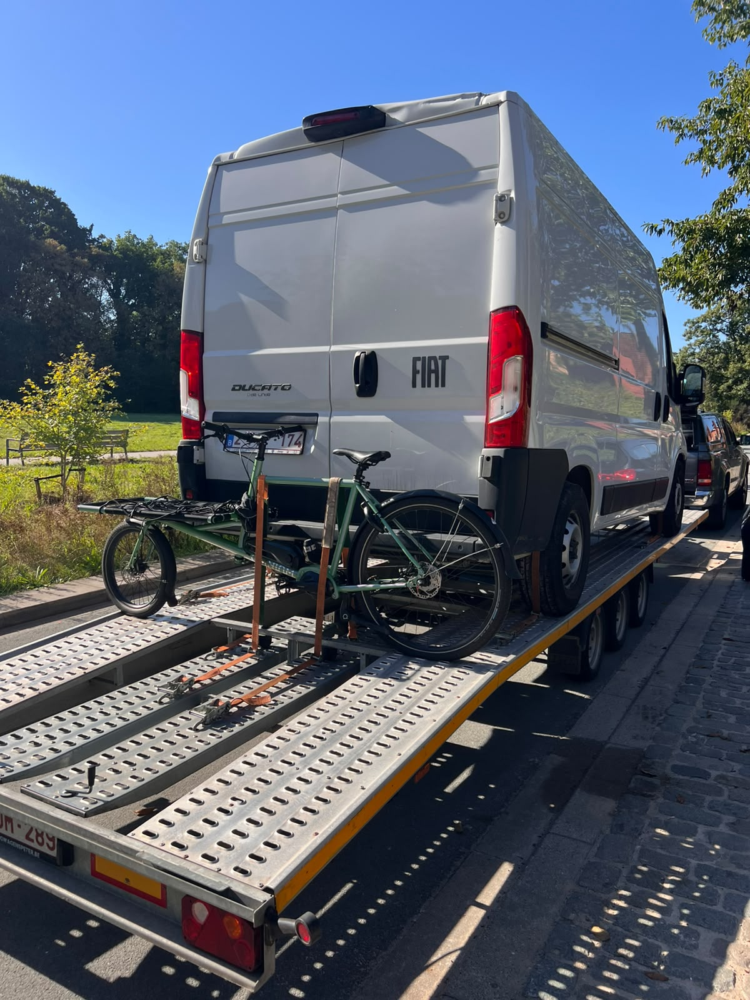

16 septembre 2026
Aider un client avec un « Smile », ça nous rend heureux !
Smiling Barista nous a appelés ce matin à 9 h, ou comment a commencé notre histoire « Smile et café ».

Malheureusement, pas de visages souriants chez les employés de Smiling Barista. L'équipe de café mobile anversoise n'arrivait pas à faire démarrer son Fiat Ducato. La clé de contact ne tournait pas et la panique a éclaté à l'idée de devoir faire venir une dépanneuse coûteuse avec grue pour les tirer d'affaire.
Lire l'histoire complète
Saviez-vous que… un remorquage avec grue est la forme d'assistance dépannage la plus chère qui existe, parce que le véhicule doit effectivement être soulevé ? Évidemment, personne n'est content de cette idée.
Ils ont demandé notre aide et en moins d'une demi-heure, nous étions sur place avec un brainstorming de solutions intelligentes et moins chères en tête. Grâce à nos nombreuses années d'expérience, nous savons que la solution la plus chère n'est pas toujours la plus rapide ni la meilleure !

Nous voulons vous épargner l'histoire technique de la « petite manette rouge magique », mais nous avons réussi (grâce à nos connaissances nécessaires) à mettre la voiture au point mort, malgré le contact bloqué. Et cela sans avoir recours à une grue ! Le Fiat Ducato pouvait dès lors être remorqué de la manière classique et moins chère. Nous avons amené la camionnette directement au garage où le contacteur a pu être réparé.
Grâce à nos nombreuses années d'expérience, nous savons que la solution la plus chère n'est pas toujours la plus rapide ni la meilleure !
Mission accomplie !
Nous ne pouvons que dire que c'était une intervention avec le « smile ». La capacité à résoudre les problèmes et les connaissances techniques de notre équipe qui cherche pour vous une solution rapide, bon marché et sûre, c'est nous !
À propos de Smiling Barista

Ce qui est chouette dans notre métier, ce n'est pas seulement que nous pouvons aider les clients rapidement et à moindre coût, mais aussi que notre propre connaissance du monde s'élargit grâce à tous ces contacts.
Nous avons ainsi appris que Smiling Barista …

- … propose des spécialités de café mobiles avec ses Veloppresso’s et peut être présent lors d'événements, de teambuildings et d'ateliers à Anvers et dans les environs.
- … raconte avec enthousiasme aux gens tout ce qu'il faut savoir sur l'espresso et le latte art.
- … ne se limite pas à nos frontières nationales, mais s'occupe aussi de salons et d'événements en France, aux Pays-Bas, en Allemagne et en Italie.
- … peut aussi réaliser sur votre événement quelque chose de fantastique qui va au-delà d'un catering café standard !